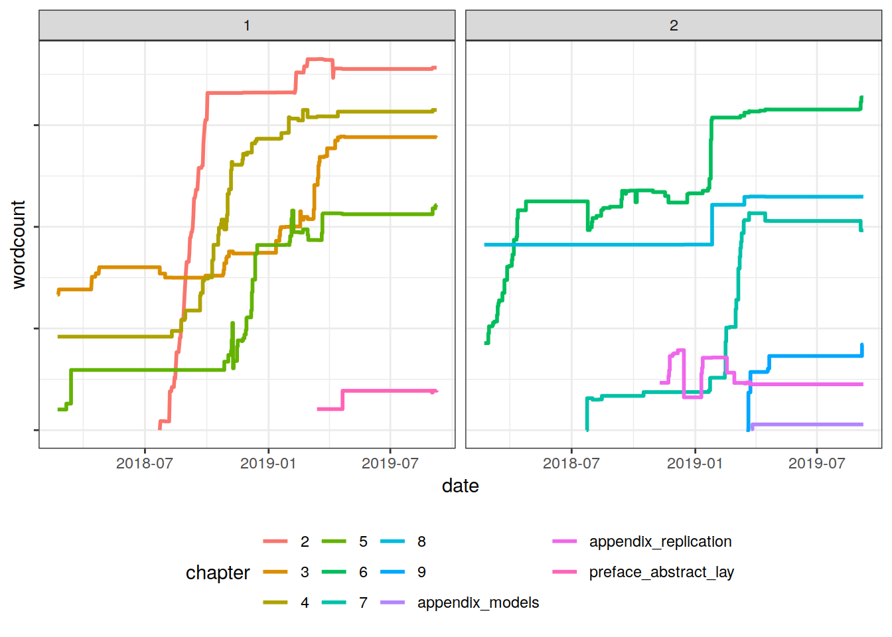
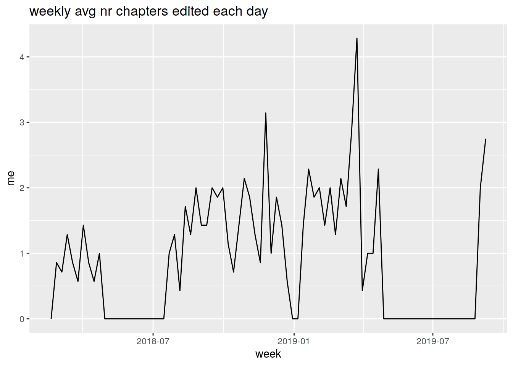

Thesis metadata (Draft)
intro
In the middle of the second year of my PhD (by which point I’d written a little bit already), I thought it would be fun to track my word count over the course of writing up (this was really more a means of procrastinating one morning). Having submitted earlier this year, I figured that now that the numbers won’t be changing further, I could do make some plots and write a little blog post about them. So here we are! We’ll have a look at some plots, and then below we’ll quickly go over how to set this up if you want to do it yourself.
Disclaimer
There’s a point which I can’t make strongly enough here: quality > quantity. If you’re starting out/in the midst of your PhD, I would encourage you not to get too fixated on the wordcount of your thesis. The number of words you write can be a pretty useless metric of your progress. I’m not sure I had either quality or quantity, and instead I’m going to suggest that provided you feel like you learnt something, and that you had (at least some) fun, then the whole process should be viewed as a success.
Anyway, let’s get into looking at what how thesis wordcount progresses over the end of a phd.

The first thing (not a huge surprise to me) was that I’m quite slow at writing. There are some gaps where I was doing an internship (I had high hopes of being motivated and carrying on writing during this period, but that just didn’t happen), and a smaller one for christmas, but other than that it’s fairly steady. I like that you can see the panic writing as a result of being offered a new job in January ’19.
I also have this information split up by the chapters which I was working on. 
I had imagined that there would be much more definite periods devoted to different chapters, but in reality the process was quite skittish for me - I often switched between different chapters - in fact, I edited multiple chapters in most weeks/days rather than focusing on only one.
nr chapters edited per week
| . | Freq |
|---|---|
| 0 | 33 |
| 2 | 6 |
| 3 | 14 |
| 4 | 10 |
| 5 | 6 |
| 6 | 3 |
| 7 | 5 |
| 8 | 1 |
| 9 | 3 |
| 11 | 1 |

productivity over the week. this is possibly inaccurate as words were counted on reboot. If I came in everyday, then this would simply mean the difference in word count could be attributable to the day prior. If i missed a day, it becomes hard to ascertain which day the words were actually written on -plot
how to do it running linux, writing in latex. crontab -e @reboot /home/josiah/……/countingwords.sh
i set it going on startup. i like to turn off my machine every evening, but in hindsight this setup makes it difficult to look at productivity by day of the week in situations where i miss a day. (if I had to leave it on for updates/running models, I would just come in the following morning and run the shell script directly if i remembered).
the bash script itself is pretty simple. it just writes the date, and then the texcount (brief output) for any .tex files in the two directories I had content in
!/bin/bash
date +‘%Y-%m-%d’ >> ~/Desktop/…/wordcount.txt texcount -brief ~/Desktop/…/chapters/.tex ~/Desktop/…/preface/.tex >> ~/Desktop/…/wordcount.txt
the output is pretty readable (as you’d expect)
next step is tidying this into something we can work with.
R script.
now that it’s in long format, plotting is nice and easy.
also possible to automate this via crontab, so that your plots update as you write, without any need for you to do anything at all! https://stackoverflow.com/questions/38778732/schedule-a-rscript-crontab-everyminute